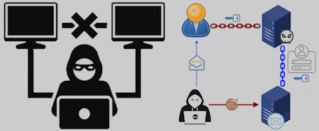
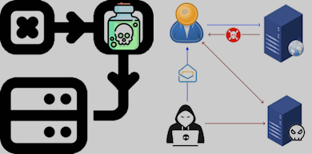

Welcome to our Red Team presentation.
A Red Team exercise is not a drill. It’s a full-scope cybersecurity assessment designed to test an organization’s true defensive readiness.
Unlike traditional audits or tabletop scenarios, Red Team operations simulate real-world adversaries — using the same tactics, techniques,
and procedures as professional cybercriminals. These engagements are stealthy, persistent, and goal-driven — just like the real thing.
Our objective is not to check boxes or generate reports — it's to reveal blind spots.
We test not just your technology, but your people, your processes, and your ability to detect and respond under pressure.
What you're about to see are controlled demonstrations of how fast, quiet, and damaging a modern cyberattack can be —
executed against systems that appear secure on the surface. This is the frontline of digital defense — and we're here to show you what it really looks like.
These are not simulations or staged attacks — these are real-world demonstrations using the same Tier-1 techniques professional adversaries deploy against healthcare networks daily. You will witness how swiftly and silently a trusted hospital device can be compromised.
|  |  | |
|
Man-in-the-Middle An attacker sends a convincing email with a fake login link. When the user signs in, full access to the email account is captured. |
Direct Exploit While on public Wi-Fi, the device is silently compromised. The attacker gains complete control—no alerts, no authentication required. |
Poisoned URL A trusted-looking link leads to a malicious site. Simply visiting it is enough to trigger infection—no downloads necessary. |